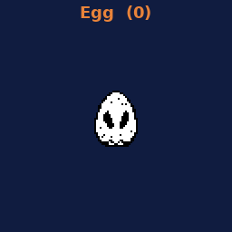
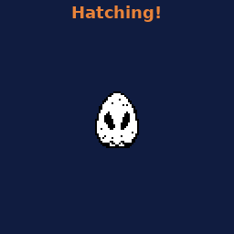
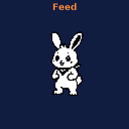
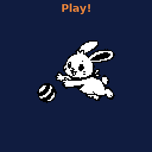
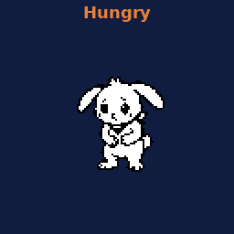
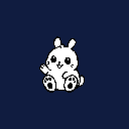
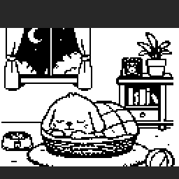
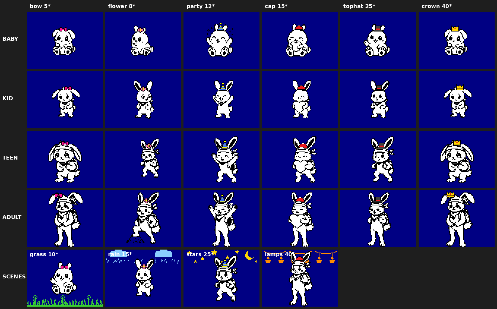
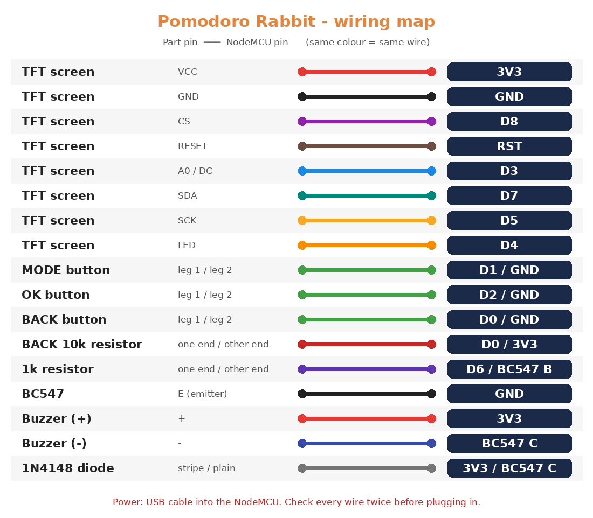

Pomodoro Rabbit is a desk timer with a virtual pet. Every focus session you finish feeds and grows your rabbit, from an egg to an adult. Skip work and it gets hungry and sad, but it never dies.

Your to-do list and your pet share one loop.
Add up to 7 to-dos on the web page, then choose one on the device.
25 or 50 minutes with an animated hourglass and a soft heartbeat sound.
Carrots, Growth and Stars. 25 min = 1 carrot, 50 min = 2.
Feed, pet and play. Your rabbit grows: Egg, Baby, Kid, Teen, Adult.
Pixel art drawn 1-bit on a 128×160 screen. It hatches, plays, gets moody and sleeps at night.






Earn Stars (25 min = 1, 50 min = 2, finished task +1, max 8 a day) and dress your rabbit from the web page.

Everything runs on the ESP8266 itself. No cloud, no app required.
pomodoro.local for to-dos, stats, history, shop, settings and backups.Pomodoro-Setup hotspot with a captive portal. No passwords in code.A breadboard weekend project. No soldering skills needed to start.
| Part | Notes |
|---|---|
| ESP8266 NodeMCU | v2/v3, 4 MB flash |
| 1.8" ST7735 TFT | 128×160, black tab |
| Passive buzzer | via BC547 + 1 kΩ + 1N4148 |
| 3 push buttons | MODE, OK, BACK |
| 10 kΩ resistor | pull-up for BACK (D0) |
| USB cable | power |
| Signal | Pin |
|---|---|
| TFT CS / DC | D8 / D3 |
| TFT SDA / SCK | D7 / D5 |
| TFT LED / RST | D4 / RST |
| TFT VCC | 3V3 |
| Buzzer | D6 → BC547 |
| MODE / OK / BACK | D1 / D2 / D0 → GND |

⚠️ Don't short TFT VCC to LED, and give BACK (D0) an external 10 kΩ pull-up to 3V3.
Arduino IDE, about 10 minutes.
https://arduino.esp8266.com/stable/package_esp8266com_index.jsonpomodoro_rabbit_v2/pomodoro_rabbit_v2.ino. Board: NodeMCU 1.0 (ESP-12E), Flash: 4MB (FS:2MB), Erase: Only Sketch.Pomodoro-Setup hotspot from your phone, pick your Wi-Fi, done.arduino-cli compile -b esp8266:esp8266:nodemcuv2:eesz=4M2M pomodoro_rabbit_v2
Firmware, art generators, wiring and step-by-step build sketches, all MIT licensed.